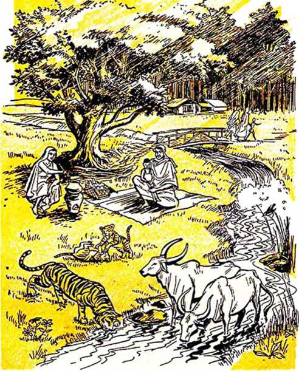
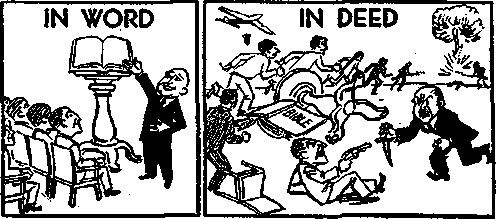
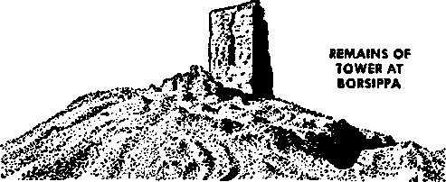
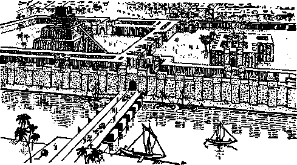

New World
1 z*
IN A
NEW WORLD
Is your heart sick? Is it heavy under the weight of woe that is upon this old world? Would it be made light to know that the end of uncertainty and fear, strife and war, disease and death, is near at hand? This may sound too good to be true, yet we challenge you to prove it false. There is solid basis for believing it. Hearts yearn to believe it, if only minds can be convinced to accept it. Is your mind free? Is it open to be convinced? Or is it closed by national or racial or religious prejudice? If you are not blinded by prejudice, if your mind is open to reason, you will read these pages with increasing interest. And at the conclusion you will have a comforting basis for belief in a righteous new world.
—The Publishers
Copyright, 1953
WATCH TOWER BIBLE & TRACT SOCIETY
Publishers
Watchtower Bible and Tract Society, Inc. International Bible Students Association Brooklyn, New York, U. S. A.
Made In the United States of America
IF YOU were dying of thirst would you refuse water from one whose nationality you did not like? If you were dying of hunger would you refuse food from a hand whose skin color did not suit you? If you were dying of an illness would you reject the help of a doctor whose race displeased you? How trivial are such prejudices when our life is at stake! Even when life is not at stake they are foolish, foolish because they blind minds from perceiving vital facts. Often it takes a time of great stress to jolt us from our prejudiced views to sane thinking. Such a time now confronts all peoples, but to see it they must lift the curtains of prejudice that block mental vision. To enter a new world of unity these curtains must be lifted forever. Why not start now? Start now by lifting them at least long enough to read these pages with an open mind. Let us reason together.
If the one offering you this booklet is of a different race or nation or color, does that change the message? Its waters of truth will still quench your thirst, if you are thirsty for truth. Its food for thought will still nourish your mind, if you are hungry for comforting thought. Its healthful words will still revive your dying hope, if you are heart-3
sick over a hopeless outlook. At the end of the path of every man, woman and child going the way of this world there looms death. But what if this grim death could be blasted from the way and the path of life be made to stretch on endlessly into a new world of indescribable happiness? If life in such a world were possible would you reject it just because the one telling you about it was of a different nation or race or religion?
Thinking persons know that people cannot be classed as good or bad on the basis of race or nation, religion or politics, wealth or poverty, age or sex, language or color, social prominence or insignificance, or any of the other classifications that divide humanity. As individuals they should not stand or fall just because they come within one of these large classes. Each one should be rated good or bad on the basis of his own deeds, and not on the basis of the deeds of his race or nation or religion or other group in which he may be placed. By the fruits each one brings forth each one should be known, and both good fruits and bad fruits are plentifully produced by any one nation or race. One mad dog does not make all dogs mad. One bad European does not make all Europeans bad. Nor does ohe bad Asiatic make all Asiatics bad. Right or wrong should be determined by what is said, not who said it; by what is done, not who did it. So rid your mind of the unreasonable prejudices that split this old world and be mentally free to weigh new ideas on their own merits. It may mean life in happiness to you, and life in happiness is what sane persons seek.
The desire to live is natural with man. Why are you now breathing? Because you choose to live. Why will you drink some water today? Because you choose to live. Why will you eat some food today? Same answer, you choose to live. For the same reason you will sleep tonight and work tomorrow. The rest will revive strength for more living, and the labor will bring the necessities of life within grasp. By all these activities everyone shows he chooses to live on.
But by breathing, drinking, eating, sleeping and working, what kind of life are we choosing? Take a look at it. It springs up like the grass, and like the grass it soon withers. It blossoms forth like the flowers, and like the flowers it soon fades. Life in this present wicked old world is of few days and full of trouble. Look at the national divisions that make some feel superior, that make them tread down those they think inferior. And the injustices and violences and wars that result, just because of racial or political differences. Look at greedy commerce that oppresses the poor of all nations, that a few might get all the wealth, and will even start wars to accumulate more. Look at the militarism whose business is the large-scale crippling and killing of mankind. And do not overlook the false religions that divide humanity, so that they not only quarrel and persecute but also launch and bless wars.
Do not stop looking with these big things in the world’s spotlight. Look at the slums in the big cities, with their poverty and filth and disease, with their hopeless inhabitants huddled in the dark holes of pathetically overcrowded huts and tenements, ill fed, poorly clothed. See the millions of refugees scattered over Asia, without hope, sunk in despair. Do not stop looking. Consider the criminals and dope addicts that prey on society, in all parts of the earth, and those behind bars that are kept by society. Look at the hospitals with beds filled with suffering bodies, and the mental institutions overcrowded by those out of their right minds. Think of the general conditions in the world, the immorality, the treachery, the unfair distinctions made between peoples because of their birth, or education, or social standing, or material possessions. Note the clouds of confusion and perplexity and fear that hover over the restless seas of humanity. Read the hopelessness and utter despair written on millions of faces. Yet these distressed millions keep doing what is necessary for them to live, because even with such woeful conditions they choose to live on.
It is impossible to point to one part of the earth and say it is the trouble spot. Nor can any part be pointed to as free from trouble. Whether living in East or West, problems are unsolved and people are suffering. Now the East stirs under feelings of nationalism and independence. Some Eastern nations now rightly possess political freedom, but has this ended their troubles? If old troubles have gone, new ones take their place. Social unrest remains, crime is everywhere, people are still starving, oppression continues, disease is widespread, political corruption exists. The common people are learning that even when their own nationals
BASIS FOR BELIEF IN A NEW WORLD 7 replace foreign rulers corruption continues to flourish, and riots often follow in protest of this national greed and injustice. Changing the political parties in power provides no remedy. The problems are still present, the solutions are still absent, and the suffering still thrives earth-wide. It is men themselves that must undergo a change, a change of mind and a change of heart. Can such a thing happen?
The West, with its educational program and technical sciences and industrial might, has till now wielded great power in world affairs, shaping events more than the East. But has it done so for the good of all mankind? Has not oppression come out of the West, as conquering empires reached out to control backward peoples in distant lands? Have not scientific discoveries been primarily used to make war more destructive? Have not the world wars of this century had their rise in the West? With all its supposed culture and education and civilization, has the West been a force for the good of all mailkind? Admittedly, for these reasons its ability to do good is great. But for the same reasons its power to do evil is also great. Honesty forces the confession that more often than not the evil has overshadowed the good. Why? For the same reason that Eastern nations have not enjoyed the relief they expected when their own nationals took over their governments. Too often men in power fall victim to their own greed and ambition and lose interest in the plight of the people. These human failings are not confined to certain races
or nations, but leap all divisions to take in all kinds of men.
PREJUDICE AGAINST A BOOK
Just as false stories and impressions can create prejudice against a people, so they can create prejudice against a book. Scientists may belittle it. Historians may contradict it. Clergymen may misrepresent it. Nations who claim to follow it may by their conduct bring reproach upon it. All this has happened to a book widely circulated in the West, with the result that it has been little appreciated in the East. That book is the Bible.
Eastern prejudice against the Bible is understandable, but is it justified? Peoples of the East learn of the racial prejudice, religious disunity, political corruption, immorality, crime and other ills that afflict Western nations. They know that out from the West have come oppressive rulers, greedy empires and horrible wars that bathed the earth in blood. Then they hear that the West is Christian, that the Bible is its guide, that it contains the remedy for the world’s ills. If the fruits brought forth by the Western nations are samples of the fruits that spring from Biblical guidance, those samples are horrible and Eastern nations want none of it. So they reason, and understandably so.
But let such peoples reason this way for a moment. For a man to have a book in his home does not prove he reads it. Even if he reads it, does that prove he follows it? If the man is bad, does that necessarily prove the book is bad? Not all Hindus are good, but they claim to follow the Vedas. Not all Buddhists are good, but they claim to follow the Tri Pitika or the Daizokyo. Confu-cianists accept the Classics as their guide, but some of them do wicked deeds. And Muslims claim to follow the Quran, but not all of them are good people. Moreover, these lands, like Western lands, are afflicted with immorality and corruption, and their past and present governments leave much to be desired in the way of righteousness. Now, does all this in itself prove as worthless and wicked the sacred writings of their various religions? To be fair, the sacred writings must be judged on the basis of their contents, and not on the basis of what their supposed followers do.
So it should be relative to the Bible. Many in Eastern nations think they cannot trust the Western nations. If not, why believe them when they claim to follow the Bible? When they say their culture is founded on Christianity, why accept their claim? Why blame the Bible as backing Western wrongdoing just because the West says it follows the Bible? To be fair you cannot judge the Bible according to what men or nations do who claim to follow it. Their claim may be false. You may learn that the Bible does not support them but condemns them. Whether you live in East or West, will you set aside any prejudice you may have against the Bible and consider some points on its behalf? If you live in the West, scientists or historians or clergymen may have turned you against the book. But scientific theories are as changeable sis the wind, histories frequently require revision, and clergy teaching often clashes with Bible doctrine.
If you dwell in the East, the sins of nations claiming to follow the Bible may have soured you on it. But you know how often national claims are false. Weigh some of the evidence in the Bible’s favor before deciding it deserves your disfavor.
When men or nations feel high and mighty and look down on the weak and lowly, their claim to be Christian is false, for to Christianity “not many wise in a fleshly way were called, not many powerful, not many noble; but God chose the foolish things of the world, that he might put the wise men to shame, and God chose the weak things of the world, that he might put the strong things to shame; and God chose the ignoble things of the world and the things looked down upon, the things that are not, that he might bring to nothing the things that are, in order that no flesh might boast in the sight of God”.—1 Corinthians 1:26-29, NW*
When men or nations show special favor to the rich they make class distinctions, are corrupt and fall short of Christianity: “You have class distinctions among yourselves and you have become judges rendering corrupt decisions, is that not so?” (James 2:1-4, NW) When men or nations seek to enrich themselves beyond their needs they trample underfoot this Bible principle: “We have brought nothing into the world, and neither can we carry anything out. So, having sustenance and covering, we shall be content with these things. However, those who are determined to be rich fall into temptation and a snare and many senseless and hurtful desires which plunge men into destruc-
tion and ruin.” (1 Timothy 6:7-9, NW) To seek to increase holdings in a lust for the power that comes with large estates or empires is condemned by the Bible: “Woe to you who join house to house, and add field to field, till there is no more room, and you are left to dwell alone in the midst of the land’”—Isaiah 5:8, AT.*
Men and nations should come to the aid of others when the need arises, but such relief work should be done out of love for the peoples in need. It is not Christian to expect something in return, some material benefit or political advantage, or swing weaker nations into the sphere of influence of the rich nation doing the giving. Such selfish giving could be used as a club to beat into subjection a nation already in trouble. Rather than give to those who can repay, the Bible says, “when you spread a feast, invite poor people, crippled, lame, blind; and you will be happy, because they have nothing with which to repay you.” That is unselfish giving and will be rewarded by Jehovah God. —Luke 14:12-14, NW.
Many times men and nations violate good principles for the sake of gaining their own selfish ends. That is not Christian. True Bible followers will hold to Bible principles regardless of the consequences. When Jesus came to earth Jewish religionists thought it was to their national interest to cater to the Roman empire, though it meant the death of their Messiah and disobedience to God’s Word. The high priest at that time “counseled the Jews that it was in their interest for one
' In this booklet AT means An American Translation. man to die in behalf of the people”; so in the name of national interest an innocent man was murdered. (Matthew 27:25; John 18:14; 19:15, NW) Today nations that claim to be Christian violate their principles to advance their interests. Nations that stand for freedom may for political advantage support oppressive foreign rule saddled on the backs of the nationals, or for political favor they may support a crooked national government that the masses of common people are trying to replace. The interfering nation, violating its own principles to gain selfish advantage, may keep the tyrants in power, but it will earn the hatred of the common people and prove itself hypocritical. Such only claim to be guided by the Bible; actually they follow the way of their own selfish interests.
And what about men or nations that show prejudice because of nationality or race or color? One thing is certain: they are not guided by God’s Word. There we read: “God is not partial, but in every nation the man that fears him and works righteousness is acceptable to him.” Also, “He made out of one man every nation of men, to dwell upon the entire surface of the earth.” And again, “There is neither Jew nor Greek, there is neither slave nor freeman, there is neither male nor female; for you are all one in union with Christ Jesus.” (Acts 10:34, 35; 17:26; Galatians 3:28, W) In addition to those in union with Christ, the millions who will gain eternal life in happiness’ on earth will be “out of all nations and tribes and peoples and tongues”. (Revelation 7:9, NW) No prejudices will divide them; their common love of righteousness will unite them. So any man or nation today that shows prejudice also shows he or it is out of step with God and the Bible.
Nor does the Bible support military might or international wars as the way to bring peace on earth. In the days of the Bible prophet Isaiah war equipment consisted of chariots and horsemen, and hence he proclaimed woe upon those that “trust in chariots, because they are many; and in horsemen, because they are very strong”; and he later declares Jehovah God’s anger “upon all nations, and his fury upon all their armies”. (Isaiah 31:1; 34:2) Jesus announced this principle: “All those who take the sword will perish by the sword.” (Matthew 26:52, NW) Military might is not what the Bible proclaims as the way to enforce peace and avoid war, but rather disarmament: “He shall judge among many people, and rebuke strong nations afar off; and they shall beat their swords into plowshares, and their spears into pruning-hooks: nation shall not lift up a sword against na-
‘‘They pvblldy declare they knew God, but they disown him by their woria." —The Bible at Thus 1:16, NW.
tion, neither shall they learn war any more.” —Micah 4:3.
From the foregoing is it not clear that many men and the nations that claim to follow the Bible are actually condemned by it? Many preach it but never practice it. Jesus said: “Not everyone saying to me, ‘Master, Master,’ will enter into the kingdom of the heavens, but the one doing the will of my Father who is in the heavens will.” (Matthew 7:21, NW) Many of the clergy of Christendom and the missionaries they send out are like the hypocritical religious leaders in Jesus’ day. Because many of their teachings are based upon the traditions of men and actually contradict the teachings of the Bible, what Jesus said to false teachers in his day applies to modern ones: “You have made the word of God invalid because of your tradition. You hypocrites, Isaiah aptly prophesied about you, when he said: ‘This people honors me with their lips, yet their hearts are far removed from me. It is in vain that they keep paying respect to me, because they teach commands of men as doctrines.’” (Matthew 15:6-9, NW) Those persons who do try to live up to the Bible commands are persecuted. Such are the conditions in the nations called Christendom.
And what is the result of all this misconduct? It results in reproach being heaped upon the Bible. Missionaries from false religions of Christendom go to lands they call heathen. They do not preach the Bible’s doctrines. They do not practice the Bible’s principles. Then on top of this the nations claiming to be Christian extend their power and influence into the lands they call heathendom and act greedily and oppressively, and heap still greater reproach on the Bible they say is their guide, but which they actually ignore.
The result is the same as when the Jews, claiming to be Jehovah God’s people but acting contrary to his will, were scattered to various nations: “And when they came unto the nations, whither they went, they profaned my holy name; in that men said of them, These are the people of Jehovah.” (Ezekiel 36:20, AS*) To those who preach God’s Word, then act contrary to it, the Bible says: “Do you, however, the one teaching someone else, not teach yourself? You, the one preaching 'Do not steal’, do you steal? You, the one saying ‘Do not commit adultery’, do you commit adultery? You, the one expressing abhorrence of the idols, do you rob temples? You, who take pride in law, do you by your transgressing of the Law dishonor God? For ‘the name of God is being blasphemed on account of you people among the nations’; just as it is written.” (Romans 2:21-24, NW) Certainly those who pose as the Bible’s friends yet act contrary to it are its greatest enemies. Their hypocrisy has turned millions in the West against the Bible, and their sins have prejudiced millions in the East against the Bible. But honest persons, whether in East or West, should not blame the Bible as supporting what it really condemns.
So peoples of the East should not think they would have to become like the Western nations
* In this booklet AS means American Standard Version. if they followed true Christianity. Rather, such copying of the West would be fatal, for its fruits are not Bible fruits. Nor should any in the East be prejudiced against the Bible because they think it is a Western book. It is not. It was largely written in the East. Every individual God used in its writing was of the East. The faithful priests and prophets it discusses were from the East. The one true religion was developed there, the first true worshipers were there, and Christianity came into existence there. The Bible and its entire background stem from the East. From the East it spread throughout the world, but it has not been practiced where it has spread. Studied some, read much, ignored more, but practiced very little. And misrepresented very much.
Whether the Bible comes from East or West matters little, for its author is Jehovah God. God is not American, British, Chinese or Pakistani, is he? No, nor is he Catholic or Protestant. He is impartial and without prejudice, and this complete absence of prejudice is reflected by the Bible. He has provided a way of salvation into a new world, and it is open to men of all kinds. He is a God of peoples, and not of just one nation or race or religion. He is not a God of just the East or the West, but of the entire universe. He speaks for himself
Ancient writing on day tablet of Noah's time. Front of day envelope broken away lo mow tablet kiddo.
BASIS FOR BELIEF IN A NEW WORLD 17 through his Word the Bible. So find out what he says to you in that book. Let him through its pages say what he stands for. As we read: “Let God be found true, though every man be found a liar, even as it is written: ‘That you might be vindicated in your words and might win when you are being judged.’ ” (Romans 3:4, NW) If we let the Bible speak for God, it will prove fake Christians to be liars. His words in the Bible will be vindicated as true and will win acceptance when fairly judged on their merits.
HOW WE GOT THE BIBLE
But before accepting the Bible as true many will want to know of its origin, age, preservation, authenticity and accuracy in the light of modem knowledge. Only then can they have a basis for belief in the new world it promises. It is a collection of sixty-six booklets bound into one large book, the Bible. “Bible” literally means “booklets”. These inspired booklets were written by more than thirty-five men, over a period of more than sixteen centuries, from 1513 B.C. to about AD. 98. Originally part of the Bible was written in Hebrew, part in Aramaic, and part in the common Greek of the first century after Christ. Now it has been translated into more than 1,125 languages, and is the most widely circulated book on earth.
The Bible itself indicates that the Hebrew prophet Moses wrote the first five books, starting to write in 1513 B.C. Critics used to scoff at this statement, saying writing was unknown then. Now they admit it was widely known not only in Moses’
time but in Abraham’s time five centuries earlier. It was even known before the Bible flood of Noah’s day, 2370 B.C. Thousands of clay tablets with writing on them have been found that existed during Noah’s time. Some written tablets are dated back by archaeologists to nearly four thousand years before Christ, which would reach all the way back into the life span of the first man, Adam. The scientific study of past human life as shown by relics, tools, inscriptions, monuments and other material remains of their existence is known as archaeology, and this science shows that Adam himself wrote! This confirms the Bible statement: “This is the book of Adam’s history [or, historical origins].” (Genesis 5:1, W) A careful study of the archaeological evidence unearthed on this point shows that ancient Bible characters living long before Moses, such as Adam, Noah, Shem, Isaac and Jacob, did write historical records on clay tablets, and that from these ancient tablets Moses compiled the Bible’s first book, Genesis, down to chapter 37 verse 2.*
After Moses’ death other faithful Hebrews wrote under inspiration of Jehovah God, until more than a thousand years later the last of the thirty-nine books of the Hebrew Scriptures (commonly called “Old Testament”) was written by the prophet Malachi, around 442 B.C. Nearly five centuries later and after Christ’s coming and death Bible writing was resumed under Jehovah’s inspiration, until finally the apostle John wrote the last of the twenty-seven books of the Christian Greek Scrip
* New Discoveries in Babylonia, About Genesis, by P. J. Wiseman. tures (commonly called “New Testament’’), arour.d A.D. 98. This brought to completion the writing of the Bible.
But none of the original manuscripts or handwritten copies of these Bible books are known to exist today, so how do we know the copies we now have are accurate and unchanged? The Bible itself shows with what care the Hebrews kept the Scripture manuscripts, and also that copies were made to further ensure their preservation and circulation. (Deuteronomy 17:18; 31:9) Particular warnings were sounded against adding to or taking from the original writings, so the copyists would be very careful to copy correctly. (Deuteronomy 4:2; Revelation 22:18,19) Today there are known to exist about seventeen hundred ancient manuscripts of Hebrew Scriptures. The oldest dated copy is of the tenth century after Christ, but in 1947 an ancient copy of the book of Isaiah was found, believed to have been written in the second century before Christ. This is more than a thousand years older than the oldest dated copy of the Hebrew Scriptures, yet aside from minor variations in spelling, etc., it is the same as the dated copy. What does this mean? It means a thousand years of copying with no appreciable change! It is a striking confirmation of the accuracy with which the Hebrew Scriptures were copied and handed down to us.
Just as in the case of the Hebrew Scriptures, so it was found necessary to make numerous copies of the original Greek Scripture writings. Some four thousand manuscript copies of the Greek Scriptures are known to exist today in the original language. In addition to this there are nine thousand copies preserved in other languages, principally Latin. Just as the find of the very old Isaiah scroll confirmed the accuracy of the text of the*Hebrew Scriptures, so the comparatively recent find of Greek Scripture manuscripts written on material called papyrus in the second and third centuries after Christ established beyond question the accuracy Of this part of the Bible. Note the conclusion of the outstanding English scholar Sir Frederic Kenyon: “The interval then between the dates of the original composition and the earliest extant evidence becomes so small as to be in fact negligible, and the last foundation for any doubt that the Scriptures have come down to us substantially as they were written has now been removed.”*
CREATION AND THE FLOOD
How does the information in the Bible compare with that of modern science? Some scientists say the Bible is unscientific, and some historians and even many clergymen charge that its history is inaccurate and based on legend and myth. Actually, such ones are blinded by their prejudice against the Bible and become sightless in the glare of the supposed light of worldly wisdom. Their reasoning powers are in bondage to their prejudice and vanity, and their oft-repeated smears and lies against the Bible have swept millions into bondage with them. But toward the
* The Bible and Archaeology^ by Sir Frederic Kenyon, pages 288, 289.
end of the nineteenth century and during this twentieth century certain sciences have brought forth discovery after discovery that beat back the smears and lies and vindicate the Bible’s truthfulness. This evidence will open the eyes of those blinded by falsehoods, and will rebuild the faith that was destroyed by vain human speculations. Without prejudice, weigh just a small part of the growing evidence that supports the Bible as scientifically sound.
The Bible’s first verse states: ‘Tn the beginning God created the heavens and the earth.” (Genesis 1:1, AW) Some religions not based on the Bible disagree, saying the material heavens and earth have always existed as they are now. They deny a beginning or creation. Which view is scientific? The Bible’s. Science knows of radioactive substances in the earth and universe, which decay at given rates and eventually quit changing or become stable. If these substances had existed forever the radioactivity would have long since ceased; but it has not. It may be illustrated by having a barrel full of water and punching a hole in the bottom. The water will run out and in time the barrel will be empty. Now, if you see such a barrel with water still running out you will know the barrel of water has not existed that way forever. If it had the barrel would have long ago run dry. In a similar way, all radioactivity would have long ago disappeared if the earth or universe had existed forever. Also, science says the universe is like a clock that is running down. According to science, if it had existed forever it would be com-
22 BASIS FOR BELIEF IN A NEW WORLD pletely run down by now. So science says it had a beginning. More and more scientists speak of a time of creation. One very prominent scientist, George Gamow, even wrote a popular book entitled “The Creation of the Universe”.
When did the universe come into existence? The Bible does not say, and science cannot be sure. But on the basis of their radioactive clocks and expanding-universe theory many scientists say it was between three and four billion years ago, and that the materials of both heavens and earth are the same age: “Many astronomers think the earth, the sun, the other planets, the distant stars and all the rest of the universe were created at about the same time.”* This fits Genesis 1:1, which says both heavens and earth were created “in the beginning”. Billions of years could have elapsed between the creation of the materials of the universe and the creative week described in Genesis 1:2 to 2:3, for that week with its six creative work days only concerned the final development of the earth and the placing of life upon it. Moreover, those creative days were not twenty-four-hour days but were thousands of years long, as careful study of the Bible shows, in the Bible the term “day” frequently means more than twenty-four hours. —2 Peter 3:8.
If there is a creation there must be a Creator, just as when there is a house there must be a builder of that house. And just as the beautifully constructed house reflects the abilities of the builder, so the wonders of the creation around us reflect
* National Geographic Magazine, January 1952, page 122.
BASIS FOR BELIEF IN A NEW WORLD 23 the wisdom and power of Jehovah the Creator, though he is invisible to us. (Romans 1:20-25: Hebrews 3:3, 4) The famous scientist Albert Einstein is so impressed with the orderliness of the universe that in presenting his new theory that opposes mere chance and uncertainty in the universe he said: “I cannot believe that God plays dice with the cosmos!”*
When the Bible speaks about God’s creation it is accurate. The ancients who lived when the Bible was being written had strange ideas as to the shape and support of the earth. Many thought it flat. The Egyptians thought it was held up by five pillars; but what held the pillars? The Greeks thought one of their gods, Atlas, supported it; but who supported Atlas? Others thought it was balanced on the back of an elephant, who stood on a turtle, who swam in a cosmic or universal sea.t Science knows the earth has no support visible to man. So did the Bible, long ago: Jehovah “hangeth the earth upon nothing”. (Job 26:7) Long ago the Bible told what science now knows, that man cannot measure the extent of the universe or comprehend the foundations of the earth. (Jeremiah 31:37) Man’s most powerful telescope can see two billion light-years (one light-year is roughly 6,000,000,000,000 miles), but cannot see the end of the universe. Man can discern no foundations for earth; he does not even understand the gravitational force or field that holds it in- place. And
* New York Times, March 30, 1953.
t The Harmony of Science and Scripture, by Harry Rimmer, pages -92, 93.
while ancient man thought the earth was flat, the Bible spoke of Jehovah as sitting over “the circle of the earth”. The Hebrew word hhug translated “circle” may also be rendered “sphere”, according to Davidson’s Concordance. Hence Moffatt’s modern translation of Isaiah 40:22 reads: “He sits over the round earth.” This was written in the eighth century before Christ, when men thought the earth flat.
And here is powerful proof of the Bible account of creation. Science says that at one time the hot earth was enveloped by gases and vapors and its surface was in darkness. As it cooled some vapors condensed to form earth-wide seas, an atmosphere came into existence, and diffused light reached the surface by the time dry land appeared and both water and land plant life had begun. There came primitive grasslike forms, also seed-bearing herbs, and trees with seeds encased in fruits. At this stage the earth was like a global hothouse, with vegetation from Arctic zone to Antarctic zone. As the atmosphere cleared more, the outlines of sun and moon and stars became dimly visible from the earth’s surface, and mild seasons began, but with warm-climate zones extending nearer to the poles than now. After plant life came animal life, first in water, then flying creatures, and finally land mammals, with man last. Now, the striking truth is that the first chapter of the Bible’s first book, Genesis, gives these same events in the same order of development! Scientists only learned this recently. How did the writer of this Bible chapter know it long ago? To say he guessed it is to be
BASIS FOR BELIEF IN A NEW WORLD 25 ridiculous, for his chance of doing that is one in millions! He could have known it only by inspiration or information from God the Creator of it al? This same Bible chapter shows the various forms of life were created, and that when they reproduced they did so “according to their kinds". Evolutionists say life just happened to pop into existence from inanimate earth, but it does not happen now and they cannot make it happen in their laboratories. They say simple first forms changed into new forms as they reproduced, to produce the varied and complex forms of plant and animal life known today. True science does not support this theory. Fossils or ancient remains of life found in the layers and rocks of the earth show many varied and complex forms of life started suddenly, with no simple forms preceding them. Nor do these fossils show slow changings or evolv-ings from one form of life to another, but rather ancient fossils are the same as types living today. True science confirms the Bible statement that life brings forth offspring “according to its kind”. (Genesis 1:11,12, 21, 24, 25, NW) Many scientists admit that evolution is both unproved and improvable.*
Critics of the Bible slur it by saying that it got its accounts of creation and a global flood from Babylonian legends. The science of archaeology flatly disproves this charge. It indicates that nearly six thousand years ago the first man Adam wrote about creation and more than four thousand
• For a thorough consideration of evolution and the Bible see the Watchtower Society's booklet Evolution versus The New World, years ago Noah and his sons recorded the facts of the flood. That was before Babylon existed. As people scattered after the global flood, exaggerated and twisted versions of these events came into existence, along with the new, false gods that were developed by various religions. Monotheism, or belief in one God, came first, despite the common claim that polytheism, or belief in many gods, was first. Archaeology has conclusively shown that the farther back in time we go the fewer gods ancient peoples believed in. For example, the Sumerians, who are about the most ancient people known to archaeology, at the end of their culture had five thousand gods, but when traced back to their earliest beginnings had only one deity, the Sky-God. Pure monotheism and pure records of creation and global flood were first, and only afterward were these corrupted into polytheism and unreliable legends.* But the Bible preserves the true records in all their purity.
However, the existence of so many different Flood legends is strong evidence that an actual event gave rise to them. There are more than ninety versions found in the traditions of all nations. Every living race that has been studied has in its folklore an account of the Flood. It will not do to say these legends concerned different local floods and not the global one of Noah’s day, for they all agree on some major features peculiar to the Biblical flood. Most of them have several points in common, but nearly all of them tell of an ark
* The Bible Comes Alive (6th ed.), by Sir Charles Marston, pages 20, 21. 189-200; New Discoveries in Babylonia About Genesis, by P, J. Wiseman, pages 124-126. of refuge for the survivors, a global destruction by water of all life outside the ark, and a seed of mankind preserved.*
The science of geology (history of the earth and its life, specially as recorded in the rocks) supports the Flood. Sea shells are found on the highest mountains. Wide destruction of life in a watery deluge is evidenced in earth layers where their remains abound. Some cases, such as the mammoth, show destruction caught them unawares, for green grass is found in their stomachs and even in then' teeth, the calamity overwhelming them in the midst of a meal. Thousands of such mammoths are to be found far north, frozen in the earth, where even grass does not grow today.! This shows warm-climate zones extended nearer to the poles before the Flood than after it, and science readily acknowledges plant and animal life used to penetrate much nearer to the poles than present climate allows.! Why the change in climate? The flood of Noah’s day. The Bible shows the main cause of the Flood was the fall of “the great water canopy” overhead as torrential rain. (Genesis 7:11, 12, NW) Just as a heavy canopy that once made the earth a global hothouse on the third creative day thinned on the fourth to usher in mild seasons and climate zones, so the complete fall in Noah’s day of what remained of this canopy
* The Deluge Story in Stone, by B. C. Nelson, pages 186-168; The Harmony of Science and Scripture, by Harry Rimmer, pages 222, 223.
t The Deluge Story in Stone.
t Modern Science and Christian Faith, page 21; Biography of the Earth, by George Gamow, pages 171, 218. brought about present rigorous seasons. Unhindered by any canopy, the sunlight was stronger and made greater temperature differences between poles and equator.
Such climatic change could affect the life span of man. The Bible shows men lived for hundreds of years before the Flood, but that following it the life span dropped rapidly. The Bible does not say why. A possible explanation is found in science. One science magazine stated: “It has even been suggested that the aging processes, the reason why plants and animals and people grow old, may be found in the free radiation of cosmic rays.”1 It is known that such rays cause changes in the offspring of parents exposed to them, and that these changes are harmful.! Prior to the Flood the watery canopy would shield out some of the rays, but with the canopy gone after the Flood more would reach the earth. So if the scientific view expressed above is true, it might explain the more rapid aging following the Flood, and also an increase in varieties of plants and animals within the family kinds emerging from the ark.
Also, there is some archaeological evidence of the Flood. In ancient tablets repeated references are made to “the flood”, “the age before the flood,” and “the inscriptions of the time before the flood”4 More than seventeen centuries after the Flood the Assyrian king Ashurbanipal (called Asnapper in the Bible, at Ezra 4:10) exulted: “I had my joy in the reading of inscriptions on stone from the time before the flood.”* This flood must have been so outstanding that it needed no further identification, though seventeen centuries had passed! It was obviously the flood. In different places in the Near East flood layers of earth have been found, the most notable being that at Ur of the Chaldees. While digging through the rubbish of ancient civilizations, suddenly archaeologists found a layer of perfectly clean clay, laid down by water, and more than eight feet thick. Below it the rubbish of human habitation started again, but much older. The flood that laid down this clay deposit had interrupted life for some time. This is also borne out by the Sumerian table of the reigns of legendary kings being interrupted, and their explanation that the interruption was due to the Flood, t While not all archaeologists accept this layer of earth as proof of the flood of Noah’s day, many reputable ones do.
* Light from the Ancient Past, by Jack Finegan, page 181. t Ur of the ChtMees, by Sir Leonard Woolley, pages 17-23.
MORE ARCHAEOLOGICAL PROOF OF THE BIBLE
More than one hundred and thirty years after the Flood men opposed to Jehovah began to build a temple tower on the plain of Shinar, which was to keep them united against God. To stop them Jehovah broke up their one language into many, they no longer understood one another, the work ceased, and the builders were scattered. (Genesis 11:1-9) The unfinished tower was called the Tower of Babel. Archaeologists have found the remains of several such temple towers in Babylon, but which is the original one is not certain. The traditional Tower of Babel is at Borsippa, ten miles from the center of Babylon.* Part of this impressive tower stands till this day. However, many think the original Tower of Babel is the one whose ruins are in the city of Babylon and which “was begun in the third millennium B.C. but not completed until Nebuchadnezzar’s reign”.f George Smith, staff member of the British Museum, found an ancient tablet reading: “The building of this illustrious tower offended the gods. In a night they threw down what they had built. They scattered them abroad, and made strange their speech. Their progress they impeded. They wept hot tears for Babylon.” $ Aside from the Bible and this tablet historians writing of Babylon centuries later spoke of men of antiquity that “built a huge tower, that they might ascend up to heaven. But God caused a wind to blow, and overthrew their design, and
» Pocket Bible Handbook, page 82; Nebuchadnezzar, by G. R. Tabouis, pages 46, 47, 69, 70.
t The Westminster Historical Atlas to the Bible, page 25.
J Pocket Bible Handbook, pages 82, 83.
BASIS FOR BELIEF IN A NEW WORLD 31 gave to each a different language; wherefore the city was called Babylon”.*
More than three centuries after the Tower-of-Babel scattering, Lot and his family fled from Sodom to escape a destructive rain of “sulphur and fire”, brought by Jehovah to destroy the wicked “cities of the District”. The general area was called “the Valley of Siddim, that is, the Salt sea”, and had bitumen pits or asphalt deposits. When Lot and his family fled, his wife looked back and was turned into a pillar of salt. Lot eventually settled in the nearby mountains and from him descended the Moabites and Ammonites. (Genesis 13:12; 14:3,10; 19:1-38, NW) Can these events be confirmed?
The Bible locates the spot, when it speaks of the vallby of Siddim’s becoming the Salt Sea. The southern end is shallow, and submerged forests indicate water did not always cover the area. Apparently the “cities of the District” were located there. Asphalt deposits are still there, as are salt and sulphur deposits. It is significant that archaeologists say the inhabiting of the area suddenly ended about the time the Bible sets for the fiery destruction, and that the Moabite culture started soon thereafter in the nearby mountains, where Lot fled with his two daughters.?
Some enlightening quotations follow: “A careful survey of the literary, geological and archaeological evidence points to the conclusion that the
* Historical Evidences on the Scriptures, by George Rawlinson, pages 70, 278.
t Biblical Archaeologist, May 1942; Explorations at Sodom, by M. G. Kyie, pages 75-80.
infamous ‘cities of the Plain’ (Genesis 19:29) were in the area which now is submerged beneath the slowly rising waters of the southern part of the Dead Sea [Salt Sea], and that their ruin was accomplished by a great earthquake, probably accompanied by explosions, lightning, ignition of natural gas and general conflagration. In Transjordan about 1900 B.C. the formerly flourishing settlements and fortresses fell into disuse as the people for some unknown reason ceased living in towns and returned again to nomadic life.”* Bible chronology indicates it was sometime after 1919 B.C. that this destruction occurred, and archaeology confirms that date.
Here is information from the geologist’s viewpoint: “This region was found by the geologists to be a burned-out region of oil and asphalt. . . . Now wherever these conditions exist there is an accumulation of gases, and the geologists tell us that here, at some time which they cannot exactly fix, these gases were ignited by some means, also to them unknown, and there was a great explosion, with first an upheaval, and then a subsidence of the strata. The character of the ruptured strata has also been determined, with most interesting conclusions. There is along the lower part of this Plain a great stratum of rock salt, which on the western side of the Plain shows itself in that'great salt mountain, now known as Jebel Usdum. At its base is a stratum of rock salt about one hundred and fifty feet thick. It is almost pure salt, but lies in layers of varying thickness. Mixed with the lay
* Light from, the ancient Past, page 126.
BASIS FOR BELIEF IN A NEW WORLD 33 ers of salt, and falling down over them also, is a marl in which is much free sulphur, lumps of which we picked up along the sea. When the explosion of the gases took place, this stratum of salt mixed with sulphur was ruptured with the other strata, and the salt and sulphur carried up into the heavens red-hot, and so rained down upon Sodom and Gomorrah and over the whole region, exactly as the Scripture describes the rain of fire and brimstone from heaven. Mixed with salt and sulphur was also asphalt, heated to a high degree. . . . One of the refugees/like some of those at Pompeii, tarried too much and was caught in the descending deluge and incrusted with salt, as indeed the mountain peaks near by are to this day.”*
A scientific magazine confirms the above, suggesting it was lightning that touched off the explosions. It gives testimony of historians who saw the ruins before the area became submerged. The Greek geographer Strabo wrote about the turn of our common era, and the Jewish historian Josephus lived in the first century A.D. Of them the scientific magazine states: “Josephus had apparently visited the site of the catastrophe for he asserts that this story about Sodomitis, the land of Sodom, deserves credence because it is based on what was seen. The thunderbolt or lightning appears to enter the story with Josephus for previous writers spoke of fire coming from heaven. Josephus confirms Strabo’s statement that he saw traces of fire or of burning and also remains of the destroyed towns.
• Explorations at Sodom, pages 127-134; The Westminster Historical Atlas to the Bible, pages 20, 26, 65, 66.
Strabo had seen ruined settlements here and there while Josephus said that 'shadows’ or ‘shades’ of the five cities were to be seen. It would seem that at least the entire plain was not under water in the first century of our era.” The famous historian Tacitus also includes a report on the region in his writings.*
In 1473 B.C. the nation of Israel had been delivered from Egyptian bondage and was at the River Jordan, ready to cross into Canaan (the modern Palestine), the land promised them by God. The Bible next tells that the waters stopped flowing and heaped up, to allow Israel to cross on the dry river bed. (Joshua 3:14-17; 4:18) This was miraculous, but Jehovah could have used natural forces to accomplish it. For sixteen hours a landslide stopped the flow of waters A.D. 1267. Centuries later, in 1927, a similar landslide at the same place dammed up the river for 21 hours. Moreover, these two blockages of the river occurred at the same place as it did in Joshua’s time, who was the visible leader of Israel then.t
After the crossing the walls of the town of Jericho fell down, to allow Israel to take the city. One section of the wall remained standing, for there upon it was the house of faithful Rahab. Also, the city was put under curse and not to be looted, but burned. A curse was pronounced on anyone who rebuilt the city. (Joshua 2:15; 6:5, 17, 18, 20, 22-24, 26) According to the Bible all
* Biblical Archaeologist, September 1943: Josephus’ Antiquities, Book I, chapter 11. section 4, and Wars, Book IV, chapter 8, section 4, and Tacitus' Histories, Book V, chapter
t The Story of Jericho, by John Garstang and J. B. E. Garstang, pages 139, 140.
this happened and archaeology confirms it. Professor Garstang began excavations at Jericho in 1930. He found the double walls toppled down the slope, as if leveled by an unseen hand. One section of wall still stood, and could have been where Ra-hab’s house was. There was evidence of unusually intense burning of the ruins. Nor had the city been looted, for provisions of dates, barley, oats, olives and other foodstuffs were found, though charred by the flames. Also no substantial rebuilding of the city took place until some five hundred years later.* That would be about the time of Israel’s King Ahab, at which time the Bible states the city was rebuilt.—1 Kings 16:33, 34.
This assault on Jericho was the start of the Hebrews’ invasion of Canaan to take over the land God had given them. It had been foretold that their coming would strike terror into the hearts of the people. (Exodus 15:15; Deuteronomy 2:25) Rahab and others in Canaan testified that this happened. (Joshua 2:9,11; 5:1; 9:24) Archaeology seems to confirm this and to indicate the time of the Hebrews’ conquest of Canaan. At the time Canaan was under control of Egypt, and the city kings scattered throughout Canaan were dependent upon Egypt for their authority. In Egypt, at Tell el-Amarna, pleas for help were found that these city kings of Canaan had written to Egypt, and they spoke of an invasion by the Habiru. The king of Jerusalem was particularly urgent, and his city was near Jericho. He wrote that the Habiru “are
♦ The Story of Jericho, pages 136. 141, 142, 146, 150; The Bible Comes Alive, pages 85-89.
seizing the cities of the king” and “are devastating all the lands of the king. If there be troops in this year, then all the lands will remain the king’s; but if no troops arrive, the lands of the king my lord are lost”.2
While it cannot be said with certainty, many archaeologists believe the Habiru were the same as the Hebrews under Joshua. The name Joshua even appears in one of these letters, and of this one scholar observes: “It is a remarkable coincidence, if coincidence it is, that a historical Joshua actually is mentioned in an Amama letter; name, place, and time seem to force an identification of this historical Joshua with the Joshua of the epic.”t
Critics of the Bible used to charge that its history was mere myth and it was full of names of kings that never existed. One book on archaeology tells that the Bible mentions forty-seven monarchs aside from those of Israel and Judah, but these names were not found in worldly histories. So the critics, in keeping with their prejudice, said these kings never did exist. Commenting on this, the book states: “For this reason the learned leaders of ‘higher criticism’ relegated these forty-seven monarchs to the columns of mythology. They were grouped among ‘the fables and folklore of the Old Testament’ which this deluded school mistakenly taught was one of the basic weaknesses of the text. Then one after another these disputed monarchs began to rise from the dead in an archaeological
BASIS FOR BELIEF IN A NEW WORLD 37 resurrection. In some cases a burial mound was uncovered; in others, an annalistic tablet, a boundary marker, or a great building inscribed with the monarch’s name. Now, all forty-seven of these presumably fabulous characters have been transformed from the columns of ‘mythology’ to the accepted records of established history.”* So again the science of archaeology vindicates the Bible.
In hundreds of ways archaeology has corroborated the accuracy of the Bible, but space forbids presentation of additional facts. However, here are some statements by archaeologists or other scholarly sources. Here are two concerning the Hebrew Scriptures. “I do not think it will be long possible, even if it is now possible, for us to deny the remarkable accuracy of detail in the narratives of the Old Testament. Incidents hitherto regarded as legend, have been proved historical by recent discovery. ... There is actual history at the back of all of the narratives.”! “It is therefore legitimate to say that, in respect of that part of the Old Testament against which the disintegrating criticism of the last half of the nineteenth century was chiefly directed, the evidence of archaeology has been to re-establish its authority, and likewise to augment its value by rendering it more intelligible through a fuller knowledge of its background and setting. Archaeology has not yet said its last word; but the results already achieved confirm what faith would
* Dead Men Tell Tales, by Harry Rimmer, page 22.
t Accuracy of Old Testament in Light of Recent Palestinian Archaeology, by J. Garrow Duncan.
38 BASIS FOR BELIEF IN A NEW WORLD suggest, that the Bible can do nothing but gain from an increase of knowledge.”*
Following are some statements relating to the Bible as a whole. “No major contention of Scripture has been proved unhistorical.”f “Archaeology contains irrefutable proofs of Biblical statements. Detailed accounts of almost innumerable discoveries dug up by pick and spade from ancient tombs and buried cities in Bible lands ably support the Scriptures.”^ “This writer once thumbed through the book of Genesis and mentally noted that each of the fifty chapters are either illuminated or confirmed by some archaeological discovery—the same would be true for most of the remaining chapters of the Bible, both Old and New Testament.”® Concerning the wealth of archaeological findings as they relate to the Bible, one archaeologist said: “In the bewildering mass of all this evidence which together would weigh so many tons that the figure, if computed, would appear fabulous, there is not one word, one testimony, or one fact that has contradicted or disproved a single line of the Holy Bible.’”'
Three final quotations relate to the higher criticism of the Bible and show how unsound it is. “The asserted historical inaccuracies in Daniel are not statements which are disproved by history, but only statements which have seemed difficult to harmonize with the meager accounts of secular historians. The asserted historical inaccuracies
* The Bible and Archaeology, page 279.
t Archaeology and Israel, by W. F. Albright, j Archaeology and the Bible, by G. A. Barton.
® Archaeology and Bible History, by J. P. Free, page 340.
» Dead Men Tell Tales, page 160.
BASIS FOR BELIEF IN A NEW WORLD 39 have, moreover, been steadily diminishing before the increasing knowledge of the times of Cyrus. . . . The growth of our knowledge of this period shows how cautious one should be in doubting the historical accuracy of the Biblical records.”* “During the last ten years the science of Biblical archaeology has shown Bible criticism to be unsound in its premise and wrong in its conclusions.”! “One of the most brilliant modern archaeologists, representing one of the greatest universities in the world, said in Iraq: ‘I was brought up a “Higher Critic”, and consequently disbelieved in the actual truth of the early narratives of the Bible. Since then I have deciphered thousands of tablets, and the more I learn, the more I believe the Bible to be true.’ ”t
THE BIBLE AND MEDICAL SCIENCE®
Like primitive peoples today, the ancients had strange and superstitious ideas about sicknesses and cures. Hence, in the field of medicine how did Moses know so much when peoples around him knew so little? He was versed in the learning of the Egyptians, but aside from wounds and surgical matters their discovered writings on the subject are superstitious nonsense. Yet Moses displayed astounding knowledge in preventing both the start and the spread of germ diseases, and one would think he knew of germs long before the scientist Pasteur revealed it to modern medicine in just the
* Westminster Dictionary of the Bible, page 130.
t Fresh Evidence About Old Testament, by Sir Charles Marston. X New Discoveries in Babylonia About Genesis, page 140.
® When not otherwise Indicated, sources for material under this heading are Chapter VIII of Modern Science and Christian Faith, and Chapter VI of Modern Discovery and the Bible.
last century. The reason is not far to seek. Moses received his instruction from none other than Jehovah God. Under divine guidance Moses wrote on these matters thirty-five centuries ago. His writings on health are found in the Bible books from Exodus to Deuteronomy. The code of laws in these books is often called the Mosaic Law.
This law said only animals that both part the hoof and chew the cud could be eaten, and regulations covered birds and fishes also. Science recognizes the wisdom of this, and that animals not in this class are safe only if cleanly fed and well cooked. (Leviticus chapter 11) Recent studies show the pig is subject to a disease called trichinosis; the rabbit has tularemia; the parrot may have psittacosis; certain fish have tapeworms. The Mosaic Law excluded such risky foods. Meats were inspected, and could not be eaten if over two days old. No animal that died of itself could be used, as it might convey some germ infection or parasite. (Deuteronomy 14:21) Eating blood was forbidden for spiritual reasons, but even from a health standpoint its avoidance was good because of such dangers as septicemia and parasites. —Genesis 9:4; Leviticus 3:17; 7:26; 17:10,11,14; 19:26; Acts 15:19, 20, 28, 29; 21:25.
Dead carcasses were not to be handled, and if anyone did purification measures were taken. Specially was this emphasized in the case of rodents. (Leviticus 11:24-40) Science now knows that carcasses may be infested with fleas, ticks and lice that carry such diseases as bubonic plague, spotted fever or typhus fever. Incidentally, it was only in
BASIS FOR BELIEF IN A NEW WORLD 41 this twentieth century, in 1907, that medical science discovered rats were responsible for bubonic plague. When they die the fleas on them, which carry the plague, bite other animals or men and spread the disease. Yet the Bible knew this thousands of years ago. During such a plague it speaks of “mice that mar the land”. The Hebrew word translated “mice” may also include rats, and the rats that lay around dead marred the land and the fleas from them spread the plague. Blame for the plague was rightly placed on the dead rats. —1 Samuel chapters 5 and 6.
Leprosy was a great plague of the Orient. Moses gave it much attention, in chapters 13 and 14 of Leviticus. He instructed on diagnosing it, and isolating and quarantining those afflicted with it. The patient’s clothing, bed and even house were disinfected. The leper was required to wear a covering over his mouth and cry, Unclean, to warn away others so they would not be infected. Moses may have even anticipated the modern treatment with oil esters, as he used hyssop and cedar in the cleansing processes. His methods coped with germs, whether he knew of their existence or not. Also, Leviticus chapter 15 discusses bodily issues, and strict regulations covered those having discharges that might be unclean or transmit disease.
Sanitary measures were taken, one of which protected the water supply. It was recognized that polluted water was a source of disease. (2 Kings 2:19-22) If a dead animal was found in water, the water was not to be drunk. Running water or large pools were considered safe. (Leviticus 11:29-36)
It was only some fifty years ago that medical science learned that typhoid fever, cholera and other diseases are spread mainly by polluted water. Related to this was the safe disposal of sewage. Water-borne and fly-borne diseases, such as dysentery and typhoid fever, have been great scourges in the past, specially to armies in the field, and often claimed more lives than the battles. Not until the World War (1914-1918) were effectual precautions followed. Yet the simple remedy was in the Bible all the time, and followed by Israel thirty-five centuries ago.—Deuteronomy 23:12-14.
Even in the fieid of mental health the Bible is practical. In his sermon on the mount (Matthew chapters 5-7) Jesus stressed showing love toward everyone. A tough world has long scoffed at this as weakness, but science is now learning differently. It has learned most mental ills stem from lack of love, both self-love and love for and from others. Thousands of years ago the Bible told people to love themselves and love others just as much. (Leviticus 19:18; Matthew 22:39; John 13:34) The article reporting all this concludes: “Yes, the scientists are trying to catch up with Jesus. He, too, had man’s future in mind when He said, two thousand years ago, ‘A new commandment I give unto you, that ye love one another.’ ”•
Further concerning Jesus’ famous sermon on the mount a leading mental doctor said: “If you were to take the sum total of all the authoritative articles ever written by the most qualified of psychologists and psychiatrists on the subject of men
* The Reader’s Digest magazine, September 1950, pages 115-118.
BASIS FOR BELIEF IN A NEW WORLD mental hygiene—if you were to combine them and refine them and cleave out the excess verbiage—if you were to take the whole of the meat and none of the parsley, and if you were to have these unadulterated bits of pure scientific knowledge concisely expressed by the most capable of living poets, you would have an awkward and incomplete summation of the Sermon on the Mount.”* Surely the Bible is practical for mankind.
FULFILLED PROPHECIES PROVE BIBLE INSPIRED
Men are subject to error. God’s Word is not. When men write on science their writings must be corrected as knowledge increases. But more and more men are discovering the Bible is scientifically sound. When men write history they color and twist it in their favor or omit the facts altogether. But the history in the Bible reports events accurately and does not spare even God’s servants. Archaeology has vindicated the Bible’s historical accuracy. But in another field the Bible stands completely alone. That is in foretelling the future. Men try, but fail miserably. Just in our own generation men said the first world war would make the world safe for democracy. It did not. The League of Nations was to be the political expression of God’s kingdom on earth. It was not. The second world war was to rid the earth of dictatorial rule. It has not. The United Nations was to bring nations together in peaceful co-operation. Yet most of them split into Eastern and Western
* A Few Buttons Missing: the Oose Book of a Psychiatrist, by Dr. James Tucker Fisher.
factions that fought wordy battles in the United Nations and bloody battles in Korea, and the few nations that try to remain neutral in the clash between East and West are under great pressure from both sides. Surely men are not true prophets, and if the Bible contains true prophecy it was not written by men without divine guidance. Let us examine a few of the many fulfillments of Bible prophecy.
Before the Babylonian King Nebuchadnezzar destroyed the land city of Tyre the Bible prophets Isaiah and Jeremiah and Ezekiel had foretold it, but after that the prophet Zechariah still foretold Tyre’s fall. Why? Because there was also an island city of Tyre, and that part of Tyre Nebuchadnezzar did not destroy. But Alexander the Great did, 333-332 B.C. To do it he built a mole or land bridge from the shore to the island, and this mole he made from the ruins of the old land city.* Thus were completely fulfilled Ezekiel’s words: “Your walls shall be torn down, and your happy homes destroyed; your stones and timber and dust shall be sunk in the heart of the waters.” (Isaiah 23:113; Jeremiah 27:1-11; Ezekiel 26:1-14; Zechariah 9:2-4, AT) Complete fulfillment came, nearly two hundred years after Zechariah said it, nearly three hundred years after Jeremiah and Ezekiel said it, and more than four hundred years after Isaiah said it!
Before the fall of ancient Nineveh, capital of Assyria, the prophet Nahum predicted its end by
* Archaeology and Bible History, pages 262-264; Rimmer’s Internal Evidence of Inspiration, pages 202-204.
Restoration of Babylon of Nebuchadnezzar's Mme,showing the temple lower he completed and which many present-day scholars believe was the original Tower of Babel.
fire and flood and enemy troops. (Nahum 1:8; 2:6, 8; 3:13) Thereafter the city was overthrown by the Chaldeans and Medes, but not until the Tigris River had flooded into the city and fires had started. Though the city is now known through excavation, its desolation was so complete that it later became like a myth. We read: “They were greatly aided by a sudden rise of the Tigris, which carried away a great part of the city wall and rendered the place indefensible. So complete was the desolation that in Greek and Roman times the departed Nineveh became like a myth. Yet all the while part of the city lay buried under mounds of apparent rubbish.”* Through his prophet Nahum Jehovah foretold its fate and the manner of its fall.
Even more remarkable are the prophecies about Babylon. In 607 B.C. Babylon took Judah, the
• Westminster Dictionary of the Bible, pages 428. 429; see also Prologue of Nebuchadnezzar, and pages 204-206 of Internal Evidence of Inspiration.
46 BASIS FOR BELIEF IN A NEW WORLD kingdom of the Jews, into captivity. Several years before this happened Jeremiah foretold it, and Isaiah had predicted it one hundred and fifty years before it occurred. Isaiah also foretold the Jews’ return from captivity, and so did Jeremiah, saying Judah would be restored to its land after a seventy-year period of desolation. This would be made possible by the overthrow of Babylon by the Medes and Persians. Jeremiah foretold that the Babylonian soldiers would put up no fight but would be like unresisting women. Isaiah even gave the name of the conquering Persian general, Cyrus, and said that he would find the gates of the city open to him.—Isaiah 13:17-22; 14:1, 4, 8, 12-16; 39:6, 7; 44:24-28; 45:1, 2; Jeremiah 29:10; 51:30.
In fulfillment of these prophecies, Cyrus took Babylon in 539 B.C. The city was in the midst of a drunken celebration, the gates had been carelessly left unbarred, and there was no real resistance put up by the surprised soldiers of Babylon. Shortly after Babylon’s fall Cyrus issued a proclamation permitting Judah to return to Jerusalem and re-establish Jehovah’s worship there, and as a result restoration took place in 537 B.C., just seventy years after the desolating of the land of Judah. (2 Chronicles 36:22, 23; Ezra 1:1-3) As for Babylon today it is only a heap of deserted mounds. Jeremiah predicted just that: “Babylon shall become a heap of ruins, a haunt of jackals, a horror and a hissing, without an inhabitant.”—Jeremiah 51:37, AT.
Jehovah’s prophetic preview of the rise and fall of human governments continues. While Babylon
BASIS FOR BELIEF IN A NEW WORLD 47 was still the third world power and seemingly secure in that position, the prophet Daniel spoke of the fourth and fifth world powers to come, and showed how they would themselves fall in time. He spoke of a two-horned ram as picturing the fourth world power, and a one-homed he-goat as the fifth power and which would overthrow the fourth. Thereafter the he-goat's one big horn was to break and be replaced by four little ones. —Daniel 8:3-8.
We are not left in doubt as to the correct interpretation of these symbolic words: “The ram which you saw, with the two horns, is the king of Media and Persia. The he-goat is the king of Greece; and the great horn between his eyes is the first king. As the horn was broken, and four others arose in its place, so four kingdoms shall arise from his nation, though not with a power like his.” (Daniel 8:20-22, AT) Some years after Daniel was used to foretell these big events the dual nation of Medo-Persia did overthrow Babylon and become the fourth world power. It is well symbolized by the two-horned ram, the higher horn coming up last, because the Median power came first, but the Persian power that followed surpassed it in strength. More than two centuries after Daniel recorded this prophecy the Greek conqueror Alexander the Great rose to power and cast down Medo-Persia, and upon his death in 323 B.C. the fifth world power of Greece was divided into four parts, each part ruled over by one of Alexander’s four generals. Thus did four little horns follow the breakage of the big horn of the
he-goat. How utterly impossible for man to make such amazing predictions centuries in advance, and how strikingly does it confirm the Bible as God’s inspired Word!
FULFILLMENTS IN OUR DAY
Jehovah’s Bible prophecies concerning governments take in our present time. Nearly nineteen centuries ago, when the Roman empire was the sixth world power, the Bible spoke of the five that had passed and of the seventh power that was to follow the sixth, which seventh world power exists today. But for our present day the prophecy spoke of an eighth power that was to be drawn from the other seven powers. This eighth power, which is a combination of many nations, was to come into existence, then vanish into inactivity, and later be revived as a means of international rule. (Revelation 17:8, 10-14) The eighth power rising from many nations was the League of Nations. It went out of existence, as the prophecy predicted; but returned as the United Nations, as also predicted.
Many other fulfillments of prophecy can be seen today, and they relate principally to Christ’s second presence. The exact time of his first coming as the man Jesus was foretold centuries before by Daniel, and many other details of his life then on earth had been prophesied of by other Bible writers. In fact, one Bible scholar figured out that “there are three hundred and thirty-two distinct prophecies in the Old Testament which have been literally fulfilled in Christ”.* The same remarkable
* Archaeology anil Bible History, page 284.
fulfillments of prophecy are in evidence now at the time of Christ’s second presence as were observable at his first coming nineteen centuries ago. Again it is Daniel’s prophetic writing that gives the time of Christ’s invisible second presence as enthroned King. The details of this chronology are too involved to give here, but as early as 1877 the first president of the Watch Tower Society joined in publishing the information that His kingdom would be fully established in 1914. Since his second coming is as invisible as the wind (John 14:19), Jesus’ disciples asked him: “What will be the sign of your presence and of the consummation of the system of things?” (Matthew 24:3, NW) He gave them a sign. Do we see it, from 1914 on?
Jesus indicated that many happenings taken together would constitute the sign of his second presence as King. First he said there would be world war, nation rising against nation and kingdom against kingdom, in the wake of which would come famine and pestilence and earthquakes in many places. Right on time, 1914 saw the first world war. It far surpassed any previous war in destructiveness. Yet the famines and pestilences that followed took even more lives than the war. Destructive earthquakes greatly increased. The result upon the peoples of earth was as Jesus foretold: “Anguish of nations, not knowing the way out because of the roaring of the sea and its agitation, while men become faint out of fear and expectation of the things coming upon the inhabited earth.” In a futile attempt to bring peace to earth, men formed international ruling bodies, the League of Nations and the United Nations, but these have failed to do what Christ’s kingdom alone can do. —Isaiah 8:9-13; Matthew 24; Mark 13; Luke 21, NW.
And notice how perfectly this prophecy of the last days and Christ’s second presence is fulfilled by conditions today: “Know this, that in the last days critical times hard to deal with will be here. For men will be lovers of themselves, lovers of money, self-assuming, haughty, blasphemers, disobedient to parents, without gratitude, with no loving-kindness, having no natural affection, not open to any agreement, slanderers, without selfcontrol, fierce, without love of goodness, betrayers, headstrong, puffed up with self-esteem, lovers of pleasures rather than lovers of God, having a form of godly devotion but proving false to its power; and from these turn away. In fact, all those desiring to live with godly devotion in association with Christ Jesus will also be persecuted. On the other hand, wicked men and impostors will advance from bad to worse, misleading and being misled.” —2 Timothy 3:1-5,12,13, NW.
The Bible shows that this trouble is not brought about by Jehovah God, but by his enemy. (Revelation 12:12) Jehovah shows the people of honest heart the way of escape. As Jesus foretold, in these last days of this old world and at the portals of a new world Jehovah’s witnesses preach the good news of the established kingdom, and show how Jehovah’s battle of Armageddon will cleanse the earth of wickedness and open the way to endless peace, happiness and life. This preaching work causes a separation of the peoples, some for the incoming new world and some against it. (Matthew 25:31-46) Opposers persecute the witnesses declaring this good news and scoff and sneer at the warning being proclaimed. But the very unbelief of these worldly wise ones was also foretold: “Know this first, that in the last days there will come ridiculers with their ridicule, proceeding according to their own desires and saying: ‘Where is this promised presence of his? Why, from the day our forefathers fell asleep in death, all things are continuing exactly as from creation’s beginning.’ ”—2 Peter 3:3, 4, NW.
The generation that sees the start of these foretold events will live to see the end, as Jesus said: “Now learn from the fig tree as an illustration this point: Just as soon as its young branch grows tender and it puts forth leaves, you know that summer is near. Likewise also you, when you see all these things, know that he is near at the doors. Truly I say to you that this generation will by no means pass away until all these things occur.” (Matthew 24:32-34, NW) In other words, since these things
52 BASIS FOR BELIEF IN A NEW WORLD began to take place in 1914 and have continued from then till now, some living then will also be living when the end comes at Armageddon, and so persons today who obey God and Christ can hope to live through that righteous destruction of the wicked and never die. (John 8:51) These momentous events will climax upon this present generation. That is what makes our times so urgent. That is why it is a matter of eternal life or eternal death to investigate now, inform yourself, prove that God’s Word is true, and then comply with it.
We can confidently rely on the Bible’s promises of the new world to come after Armageddon. After honest investigation, it would be foolish not to. If someone has told you the truth a hundred times, are you suddenly going to doubt him when he tells you something new? If you have never found him false, if he has been correct a hundred times or more, will you suddenly doubt his honesty for no cause? How unreasonable and illogical that would be! The foregoing pages have shown how accurate the Bible is in matters of history and science. They have shown remarkable fulfillments of many prophecies contained in the Bible. Now, there are other prophecies still to be fulfilled in the future, such as those concerning Jehovah’s promised new world of righteousness. Can we not confidently rely upon these prophecies’ being fulfilled in God’s due time, in view of the past record for truthfulness and reliability he has built up? His past record gives us solid basis for belief in his future promises. So with full confidence in their fulfill-
BASIS FOR BELIEF IN A NEW WORLD 53 ment, consider some of Jehovah’s promises concerning a new world of righteousness.
CHOOSING NEW WORLD LIFE
Would you plant a garden in a jungle? This old world has become a jungle, a rank growth of bloody militarism, grafting politicians, cheating commercial giants, hypocritical religious parasites, treacherous trucebreakers, immoral delinquents and hardened criminals. And in their midst they cultivate such thorns and thistles and poisonous plants as racial hate, religious prejudice, national bias, blasphemous teachings, stubborn atheism and vain philosophies designed to choke out the eternal truths of God’s Word. Surely this wicked world has become a global jungle infested with evil works and evil workers, and these Jehovah will plow under at Armageddon to make way for an earth-wide park of pleasure. Is it not a practical way to turn a jungle into a garden?
Jehovah created man that he might have happy homes and raise obedient children and fill the earth with a righteous race. Man was to keep the earth in a state of beauty, and exercise loving dominion over the birds and animals and even the fishes of the sea. But the realization of this divine purpose has been delayed, because the first human pair rebelled against God. They lost their right to life, earning by their disobedience the deadly wages of sin. (Genesis 2:17; 3:3, 6; Romans 6:23) Hence their offspring inherited from them, not the right to life, but sin and death: “Through one man sin entered into the world and death through sin,
and thus death spread to all men because they had all sinned.” But Jehovah’s purpose concerning earth was not to be smashed. He provided a ransom for the offspring of Adam, that they might regain what their first parent had lost: “As through one trespass the result to men of all kinds was condemnation, likewise also through one act of justification the result to men of all kinds is a declaring of them righteous for life.”—Romans 5:12, 18, NW.
To make clear the ransom arrangement consider this illustration. An adult sins, does wrong, and because of this contracts a disease. The disease germs infect his offspring. They become sick and face death from this disease. Another man comes along. He is a doctor. He has a remedy for the ailment. By this one remedy this one man can cure all the diseased offspring of the sinful adult. There is one condition: the offspring must be willing to take the prescribed treatment for cure. The doctor does not force the cure on them; he merely offers it. Some accept, others reject it. So it is with the ransom. Adam sinned and lost perfection and the right to life. He passed on to his offspring this imperfection and condemnation. Jesus came to offer his lifeblood as a ransom, and likened himself to a physician. (Mark 2:17; Luke 4:23) He offers the remedy free of charge, but to come out from under the sentence of death and regain the right to life eternal Adam’s offspring must follow the treatment prescribed by Christ the Physician. He will force it upon no one. And just as one medicine can cure millions suffering from the same disease, so Christ’s one sacrifice is sufficient to restore to life and perfection as many as choose to obediently serve Jehovah.
Those meeting the requirements prescribed in the Bible will live forever in a new world of indescribable blessings. No more will power-mad politicians oppress peoples, but Christ Jesus "shall judge the poor of the people, he shall save the children of the needy, and shall break in pieces the oppressor. He shall come down like rain upon the mown grass: as showers that water the earth. In his days shall the righteous flourish; and abundance of peace so long as the moon endureth”. (Psalm 72:4, 6, 7) That will end the senseless spilling of human blood in war: "He shall judge among the nations, and shall rebuke many people: and they shall beat their swords into plowshares, and their spears into pruninghooks: nation shall not lift up sword against nation, neither shall they learn war any more.”—Isaiah 2:4.
Wonderful peace will prevail among men and animals in that new world: "In that day will I make a covenant for them with the beasts of the field, and with the fowls of heaven, and with the creeping things of the ground: and I will break the bow and the sword and the battle out of the earth, and will make them to lie down safely.” (Hosea 2:18) At the time of creation Jehovah decreed plants were to be food for all types of animal life, not meat. (Genesis 1:29, 30) In the new world animals will return to vegetarian diet and glorious peace will reign: “The wolf also shall dwell with the lamb, and the leopard shall lie down with the kid; and the calf and the young lion and the fatling together; and a little child shall lead them. And the cow and the bear shall feed; their young ones shall lie down together: and the lion
shall eat straw like the ox. And the sucking child shall play on the hole of the asp, and the weaned child shall put his hand on the cockatrice’ den. They shall not hurt nor destroy in all my holy mountain: for the earth shall be full of the knowledge of the Lord, as the waters cover the sea.”—Isaiah 11:6-9; 65:25.
And for all these peaceful creatures the earth will yield an abundance: “The desert shall rejoice, and blossom as the rose. Instead of the thorn shall come up the fir tree, and instead of the brier shall come up the myrtle tree.” (Isaiah 35:1; 55:13) “Then shall the earth yield her increase; and God, even our own God, shall bless us. Thou openest thine hand, and satisfiest the desire of every living thing.”—Psalm 67:6; 145:16.
Nor will this satisfaction be marred by sickness or cut short by death: “The inhabitant shall not say, I am sick.” “Behold, I will bring it health and cure, and I will cure them.” “He will wipe out every tear from their eyes, and death will be no more, neither will mourning nor outcry nor pain be any more. The former things have passed away.” (Isaiah 33:24; Jeremiah 33:6; Revelation 21:4, NW) Old age will
disappear, for then “his flesh shall be fresher than a child’s: he shall return to the days of his youth”. (Job 33:25) Even the graves will be emptied as resurrection brings millions back to life! —John 5:28, 29; Acts 24:15.
That is the glorious New World life persons can now choose. It is a life that does not fade as the flower or wither as the grass. Its days are not few, but are endless. Its days are not
filled with trouble, but unspeakable joy. If people choose to cling to this present life despite its pain and suffering, how much more should they choose to attain New World living! Yet not all persons would like such living. If their idea of pleasure is to overeat or overdrink, they would not like that new world. If they are always wanting their neighbor’s wife, or seeking to divorce their own, or wanting to steal from their fellow man, or desiring to shoot someone with a cannon, or sizzle men with flame throwers, or blow women and children to bits with bombs, then they would not like that new world. If they yearn to see how much material wealth they can pile up at the expense of others, or how much adulation of creatures they can capture by being pompous clergymen, or how many men they can command or kill as swaggering military figures, then they would not relish the new world at all. None of those activities will exist therein.
But, on the other hand, if you would like to subdue the earth, transform it into fields yielding food or into parks yielding beauty, make the deserts blossom, see thorns and thistles give way to coconut and plantain trees, and properly safeguard some areas of profuse jungle or majestic mountains as habitats for many animals and as silent praisers of the Creator, then you would like the new world. If you would be pleased to exercise dominion over animals, not with guns or whips or bars, but through love and mutual trust; if you long for the time when the bear and the calf will lie together, the leopard and the kid will feed together, when the lion will eat straw like the ox, and if you would like to see the day when all these animals will tamely follow the leading of a little child, then you would like the new world. If your heart aches for the time when swords will be beaten into plowshares and spears into pruning hooks, when there will be no military schools, no learning of war, no making of bombs, no fomenters of war, then you will thank God for his new world wherein this change will occur. If you wish for the time when oppressive political rule will vanish and commercial greed will be missing, when men will build their own houses and inhabit them and dwe’l in peace under their own vine and fig tree, when the earth will ring with the happy cries of children and vibrate to the stirring songs of birds, and the air will be exhilarating with the fragrance of flowers, then you will thrill to the new world. If it is
BASIS FOR BELIEF IN A NEW WORLD 59 your heartfelt hope to see the day when the lame will leap like the hart, to hear the tongue of the dumb sing, to watch the eyes of the blind open, to observe the ears of the deaf unstopped, to witness sighing and crying give way to smiles, and tears and mourning give way to laughter, and pain and death give way to health and eternal life, then there is nothing that you will let block your way to attaining the blessed new world wherein such conditions will exist forever!—Isaiah 2:4; 11:6-9; 35:1-10; 55:13; 65:17-25; Revelation 21:1, 4.
FREE YOUR MIND TO THINK, AND LIVE!
It is not just of individual, personal importance. It is of world importance. This old world is dying, and those who stick with it will die with it. A new world is coming alive, and those who side with it will abide forever with it. Is your mind free enough to see it? Or is it so bound with the fetters of foolish prejudice that it will not even consider it? Will you let your pride be the forerunner to your fall, or will you plow under vain pride to make way for sound reason? Will you use your mind to think, or your prejudice to blind? Freedom's first stronghold is the mind, but many are their own prisonkeepers, through false pride and foolish prejudice. They are prone to blindly follow the leanings of their ancestors; their nation, their race, their religion, their politics and their close associates, instead of the dictates of a mind free to reason for itself. Fear of men, fear of what people
60 BASIS FOR BELIEF IN A NEW WORLD will think, is a snare to many that keeps them prisoners to the prejudices prevalent in their community or nation. It is easy to be frightened into conformity with the masses; it is hard to brave the jeers of the majority when we conform to our own reasoning.
It is in such ways that the god of this wicked world blinds the minds of the people under its control. (2 Corinthians 4:4) To be free from these forces we must rise above these prejudices. Only then can our minds find the freedom needed to weigh the facts about the incoming new world. Otherwise the vital information may be rejected just because we are prejudiced against the one that calls the facts to our attention; prejudiced not because we know the person to be untrustworthy, but because we do not like his nationality or religion or race. Such prejudices will keep us out of the new world, for such prejudices will never be allowed to enter it and take root there and grow there to produce all over again the crops of dissension and division, intolerance and injustice, and discrimination and death. If we are to be reasonable creatures, if we are to weigh the evidence for the new world, accept it, preach it, enter it and live forever in it—if we are to do all this, we must first free our minds of the shackles that bind us to the old world’s prejudices.
Above all is this necessary in the case of the Bible. It is the basis for belief in the new world. It is a sound basis. The foregoing presentation has shown that prejudice against it on the ground that it is unscientific is false. Prejudice against it
BASIS FOR BELIEF IN A NEW WORLD 61 on the ground that it is not historically accurate is likewise false. It is shortsighted to be prejudiced against it because many of those who claim to follow it are wicked. No prejudice against it is justified on the ground that it is a Western book, for it is not that at all. The great God Jehovah of heaven and earth is without prejudice. He plays no favorites. He is impartial. A man’s nation, his race, his skin color, his wealth, his poverty, his social standing—none of these or any other classifications matter with God if the person is a lover of righteousness and is meek and humble enough to change his ways when he learns he is wrong. Copy Jehovah in his lack of prejudice, not men and nations in their burden of prejudice. If you follow vain men blinded by worldly wisdom you will land in the ditch of destruction with them. (Matthew 7:13, 14; 15:14) Those who are truly wise will study Jehovah’s Word the Bible for themselves, will prove it for themselves, will live it for themselves, and so will establish themselves on a solid basis for belief in the new world.-Matthew 7:24-27.
Breaking the bonds of prejudice
CONTINUE TO BUILD ON YOUR BASIS FOR BELIEF IN A NEW WORLD
by continuing your study of God’s Word, the Bible. Do not let prejudice blind you to the opportunity you have of living in a new-world happiness. It is the Bible that sets before our mind’s eye this glorious vision to be realized in the near future, and we want to see it in its greatest clarity. Nothing will do more to aid you in this direction than the New World Translation of the Hebrew Scriptures, its 864 pages taking in the first eight books of the Bible, and the New World Translation of the Christian Greek Scriptures, its 800 pages covering the last twenty-seven books of the Bible.
Both of these volumes are entirely new translations in modern speech, and make use of the best ancient manuscripts in the original languages of Hebrew and Greek. The latest advances of modem scholarship are applied, the chief aim always being to faithfully translate the original text in its fullness. Extensive forewords and appendices clarify and support the translations and discuss in detail many of the more difficult passages that are sources of controversy. Helpful maps of Bible lands add their touch of completeness to both these volumes. Bound in green leatherette and printed in large readable type, these volumes are mailed, postpaid, anywhere in the world for $1.50 each, or $3.00 for both. Obtain and study them for the clearest possible rendering of these books of the Bible.
An invaluable aid in pursuit of building on your basis for belief is the 352-page book What Has Religion Done for Mankind? It traces the history of both true and false religion, showing the confusion and harm spread by the false, and the present peace and future new-world blessings to come by following the true. It even includes a chapter showing that atheistic communism is actually a Red religion with its gods and objects for worship. Whether living in the East or in the West, you need this book. Sent, postpaid, anywhere, 50c a copy.
This is the title of a new book of 384 pages that details Jehovah God’s purpose to create a new world that will remain forever. Now that you have read this booklet, this new book is the next logical Bible help for your serious study. It discusses Jehovah God the Creator, the heavens that he made, the earth on which we live, and how life started on the earth. While not a book on science, it shows that the Bible is scientifically true on these vital subjects. No established scientific fact contradicts the record of creation contained in the opening pages of God’s Word, the Bible.
In interesting style the book traces the laying of the foundation for the promised new world, the birth of the Kingdom of this new world, and how at this time a New World society is forming and growing in the earth. The evidences are accumulating that the end of this present wicked system of things is rapidly approaching, that a gathering of good-will persons for survival is now under way, and that soon the old world will have completely vanished and will have been replaced by the promised new world of righteousness. These evidences are set forth in this book, and make convincing reading for honest-hearted ones who will set aside all preconceived ideas and prejudices to weigh the material presented.
“New Heavens and a New Earth” is beautifully bound in blue material, and is attractively illustrated. Its indexes of both subjects and scriptures make the book more usable as a reference work, and the Chart of Outstanding Historical Dates, from the creation of Adam onward, aids greatly in locating events in the stream of time. The book is sent anywhere, postpaid, on a 50c contribution.
Chief Office and Official Address of
WATCH TOWER BIBLE & TRACT SOCIETY WATCHTOWER BIBLE AND TRACT SOCIETY, INC. INTERNATIONAL BIBLE STUDENTS ASSOCIATION is
124 Columbia Heights, Brooklyn 1, New York, U.S.A.
Addresses of Branch offices:
America (U.S.), 117 Adams St., Brooklyn 1, N. Y. ‘’Australia, 11 Beresford Road, Strathfield, N.S.W. ’’Austria, Liechten-steinstr. 24, Vienna IX. ‘‘Bahamas, Box 1247, Nassau, N.P. ♦♦Belgium, 28, Ave. Gen. Eisenhower, Schaerbeek-Brussels. ♦♦Bolivia, Casilla No. 1440, La Paz. “Brazil, Rua Licinio Cardoso 330, Rio de Janeiro. “British Guiana, 50 Briekdam, Georgetown. ♦♦British Honduras, Box 257, Belize. “British West Indies, 21 Taylor St., Woodbrook, Port of Spain, Trinidad. ’"'Burma, P.O. Box 62, Rangoon. “Canada, 40 Irwin Ave., Toronto 5, Ontario. ♦♦Chile, Moneda 1710, Santiago. “Colombia, Carrera 24, 16-23, Bogota. “Costa Rica, Apartado 2043, San Josd. “Cuba, Calle D No. 206, Almendares, Marianao, Hayana. “Cyprus, Box 196, Famagusta. “Denmark, Sondre Fasanvej 54, Copenhagon-Valby. “Ecuador, Casilla 4512, Guayaquil. “Egypt, Post Box 387, Cairo. “Eire, 86 Lindsay Road, Glasnevin, Dublin. “EC Salvador, Apartado 401, San Salvador. “England, 34 Craven Terrace, London, W. 2. “Ethiopia, Box 1731. Addis Ababa. “Fiji, Box 23, Suva. “Finland, Vainamolsenkatu 27, Helsinki. •♦France, 3 Villa Guibert, Paris 16'. “Germany (Western), Am Kohlheck. (16) Wlesbaden-Dotzheim. “Gold Coast, B.W.A., Box 760, Accra. “Greece, 16 Tenedou St., Athens 8. ♦♦Guatemala, 11 Avenida Norte No. 5-67, Guatemala. “Haiti, Post Box B-1S5, Port-au-Prince. “Hawaii, 1228 Pensacola St.. Honolulu 14. “Honduras, Apartado 147, Tegucigalpa. “Hong Kong, 232 Tai Po Rd., 2d Floor, Kowloon. “India, 167 Love Lane, Bombay 27. “Indonesia, Postbox 105, Djakarta. “Israel, P.O. Box 385, Jerusalem. “Italy, Via Monte Maloia 10, Monte Sacro, Rome 742. “Jamaica, 151 King St., Kingston. “Japan, 1 Toyooka-cho, Shiba-Mita, Minato-Ku, Tokyo. “Jordan, P.O. Box 18, Beit-Jala. “Lebanon, P.O. Box 1122, Beirut. “Liberia, P.O. Box 171, Monrovia. “Luxembourg, 66 Boulevard General Patton, Luxembourg. “Mexico, Calzada Melchor Ocampo 71, Mexico 4, D.F. “Netherlands, Koningslaan 1, Amsterdam-2. “Netherlands West Indies, Breedestraat 12, Otrabanda, Curasao. ♦♦Newfoundland, Canada, Post Box 521, St. John's. “New Zealand, G.P.O. Box 30, Wellington, C. 1. “Nicaragua, Apartado 183, Managua. D.N. “Nigeria, West Africa, P.O. Box 695, Lagos. “Northern Rhodesia, Box 5. Lusaka. “Norway. Inkognitogaten 28 B., Oslo. “Nyasaland, Box 83, Blantyre. “Pakistan, Post Box 7227, Karachi 3. ’’Panama, Box 274, Ancon, C.Z. “Paraguay, Ayotas 394, Asuncion. “Peru, Pasaje Velarde 165, Lima. “Philippine Republic, 104 Roosevelt Rd., San Francisco del Monte, Quezon City. •♦Puerto Rico, 704 Calle Lafayette, Pda. 21, Urb. Hip., Santurce 34. “Sierra Leone, Box 136, Freetown. “Singapore 15, 33 Poole Road. “South Africa, Private Bag, P.O. Elandsfontein, Transvaal. “Southern Rhodesia, P.O. Box 1462, Salisbury. “Surinam, Zwartenhovenbrugstraat 181 Boven, Paramaribo. “Sweden, Luntmakaregatan 94, Stockholm Va. “Switzerland, Allmendstrasse 39, Berne 22. “Thailand, Box 67, Bangkok. “Uruguay, Joaquin de Salterain 1264, Montevideo. “Venezuela, Ave. Prin. del Paraiso 27, Quinta Savtepaul, Paraiso, Caracas.
Popular Mechanics, August 1949.
t Apes, Men and Morons, by E. A. Hooton; Science News Letter, November 4, 1950.
t Pocket Bible Handbook <19th ed.), by H. H. Halley, pages 7679.
Modern Discovery and the Bible, by A. Rendle Short, page 155.
1 Olmstead's History of Palestine and Syria, page 197, as quoted In Innes's Thrilling Voices of the Past, page 64; also page 64 of Marston’s The Bible Comes Alive.